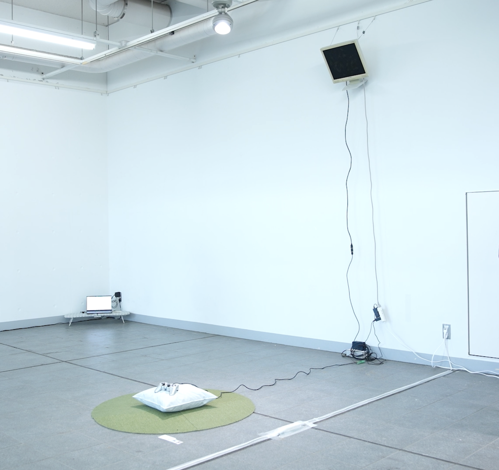

上方向に入力し続ける コントローラーと、カモメに糞を落とされる映像

コントローラーの入力と、カモメに糞を落とされる映像を組み合わせた作品。映像には METAL GEAR SOLID 2: SONS OF LIBERTY のタンカー編において、上空を見上げた際のゲーム内映像を使用している。 視点の先に、カモメが現れ、繰り返し糞を落とす。プレイヤーは入力を止めることも、視線を逸らすこともできず、避けようのない出来事を受動的に受け続ける。

コントローラーの入力と、カモメに糞を落とされる映像を組み合わせた作品。映像には METAL GEAR SOLID 2: SONS OF LIBERTY のタンカー編において、上空を見上げた際のゲーム内映像を使用している。 視点の先に、カモメが現れ、繰り返し糞を落とす。プレイヤーは入力を止めることも、視線を逸らすこともできず、避けようのない出来事を受動的に受け続ける。